受控研究框架
我们没有逐个复现已报道的系统，而是把设计拆开，在同一个测试平台、同一个基准上测试，并尽量减少每次运行之间的改动。
蓝色边框标出 JustRUA 改动的部分。点击虚线区域可以查看我们改变了什么。
评测集
23 个最不确定的任务，也就是只有时成功的任务，各取四个布局，其余任务各取一个，共 111 个回合。布局事先固定（见评测说明）。
波动最大
标准差更低
左图是每个任务在八轮中的得分标准差。右图是中等推理强度下总分的 bootstrap 标准差，评测集比每个任务各跑三次的方案更低。
行为复查
每个首轮回合都对照视频复查，得分体现不出的行为按下界计数。
01Harness 与动作
对 GPT-6 Astra 在 RoboDojo 上的首次评测发现，它在精度类任务上表现较弱，官方 L3 harness 下的精度得分只有 12.7（RoboProbe），Galbot 也看到它的决策和物理控制之间有类似的落差（Galbot）。但对 harness 和动作循环做几处合理的修正后，它的精度得分就追上了当时最强的视觉-语言-动作模型（在我们的评测集上为 25.0，DM0.5 为 24.8）。看来这部分短板很大程度上出在 harness，而不是模型本身。
1.1Codex 与完整历史
官方 L3 harness（即 RoboProbe 中的 L3 Inspect EEF）直接调用模型 API，只保留最近两次观测的图像。我们在一个 Codex 会话*里运行同样的循环，保留每张图像，并关闭 Codex 自带的工具。单独换成 Codex 反而让首轮得分下降，所以我们把提升归功于两者的组合。所有对比都沿用每回合 100 次决策的默认上限，只有最终的 JustRUA 取消了它。
| 配置 | 评测集 | 首轮 |
|---|---|---|
| 官方 L3 harness | 29.7 | 32.3 |
| Codex，最近两张图像 | — | 19.5 |
| Codex，完整历史 | 34.7 | 43.5 |
* 所有实验都运行在 Codex 0.153.4 上，固定这一版本，以免版本间的细微差异影响结果。
1.2动作设计
运动时长。官方循环里，一整段运动执行完模型才能看到画面，所以一条不稳定的 CuRobo 规划可能把机械臂带出很远。我们让每段运动在 20 个控制步后停下。像动作分块那样让模型在 3 到 32 步之间自己选（ACT、Astranomy），效果并没有更好，所以 JustRUA 保留固定上限。
| 评测集 | 无上限 | 20 步上限 | 模型自选 |
|---|---|---|---|
| 泛化 | 36.0 | 42.5 | 40.4 |
| 精度 | 9.4 | 25.0 | 14.4 |
| 长时程 | 24.5 | 24.7 | 32.5 |
| 记忆 | 52.5 | 49.6 | 60.4 |
| 开放 | 50.9 | 48.1 | 41.6 |
| 总分 | 34.7 | 38.0 | 37.9 |
三种设置都保留完整的回合历史。
其他动作接口。近期系统用到的两种替代方案都没有胜过绝对目标。相对目标即相对于实测位姿的偏移，RoboDawn 用的就是这种方式。它的得分更低，Astranomy 也有同样的发现，而且机械臂撞到物体的次数接近原来的三倍。模型读到的坐标全都在世界坐标系下，所以用偏移量可能意味着每次移动前都要多做一次减法。
语义操作用命名技能代替原始目标，SayCan 和 Code as Policies 都是这种做法。我们的语义操作构建在 move_eef 之上，没有新增控制代码或学习得到的策略。它们改变的更多是模型做了什么，而不是做得多好。模型调整相机的次数是原来的三倍多，手里的东西也掉得更多，得分没有提高。
| 评测集 | 绝对 | 相对 | 语义 |
|---|---|---|---|
| 泛化 | 42.5 | 27.1 | 23.3 |
| 精度 | 25.0 | 10.9 | 21.9 |
| 长时程 | 24.7 | 28.0 | 28.7 |
| 记忆 | 49.6 | 56.7 | 61.0 |
| 开放 | 48.1 | 46.9 | 38.1 |
| 总分 | 38.0 | 33.9 | 34.6 |
| 行为，首轮 | |||
| 视角调整 | 59 | 54 | 211 |
| 物体掉落 | 26 | 30 | 35 |
| 空抓 | 47 | 54 | 47 |
| 机械臂撞到物体 | 7 | 20 | 12 |
同样 42 个首轮回合中的行为。
任一机械臂抓取点在世界坐标系下的目标。未指定的维度保持观测值。朝向从一个固定的竖直向下抓取姿态起算，而不是叠加在当前姿态上；夹爪指令在机械臂运动之后执行。
move_eef(targets, note)left_x / y / z 以米为单位，left_pitch / roll / yaw_deg，left_gripper 从 0（闭合）到 1（张开），右臂同理。两只机械臂可以在一次调用中同时移动。give_up()模型判断回合已无法挽回时结束回合。移动序列。 每次决策最多执行四次移动，得分有所提高，主要是因为缓解了 100 次决策的预算。JustRUA 的最终配置则直接取消了这一预算。
1.3推理强度
默认的中等强度总分最高。低强度丢掉了大部分精度得分，高强度则以更高的成本用精度换来了记忆。
| 推理强度 | 泛化 | 精度 | 长时程 | 记忆 | 开放 | 总分 | 每回合成本 |
|---|---|---|---|---|---|---|---|
| 低 | 40.3 | 5.3 | 28.8 | 52.9 | 39.4 | 33.3 | $4.49 |
| 中，默认 | 42.5 | 25.0 | 24.7 | 49.6 | 48.1 | 38.0 | $4.94 |
| 高 | 38.3 | 17.2 | 23.8 | 67.3 | 40.6 | 37.4 | $5.16 |
评测集。每个首轮回合的成本。
02经验复用
来自其他回合的经验是递归自我改进的核心。在我们试过的所有做法里，它也最容易变成针对基准刷分，因为它用到的正是要评分的任务。我们测试它，是因为这种做法用得很广。结果没有哪种形式明显胜过默认配置。
2.1示范
在上下文里放示范，是帮助 GPT-6 Astra 的常见做法（SenseNova）。两个版本都取自 RoboDawn 中每个任务一条经专家筛选的成功回合，在第一次决策前插入一次。视觉示范展示它的 16 张关键帧，文本轨迹则把同一个回合按阶段写出来，用我们的坐标给出位姿、指令和结果。
| 评测集 | 默认 | 视觉示范 | 文本轨迹 |
|---|---|---|---|
| 泛化 | 42.5 | 41.0 | 40.3 |
| 精度 | 25.0 | 22.8 | 11.6 |
| 长时程 | 24.7 | 28.9 | 28.3 |
| 记忆 | 49.6 | 70.0 | 55.4 |
| 开放 | 48.1 | 36.6 | 40.3 |
| 总分 | 38.0 | 39.9 | 35.2 |
| 每回合成本 | $4.94 | $5.11 | $5.84 |
| 行为，首轮 | |||
| 借桌面中转的交接 | 9 | 15 | 13 |
| 物体掉落 | 26 | 20 | 17 |
| 双臂互撞 | 6 | 0 | 0 |
| 空抓 | 47 | 50 | 53 |
每个首轮回合的成本。
make_kong 中模型在第一次决策前看到的 16 张关键帧，来自头部相机。
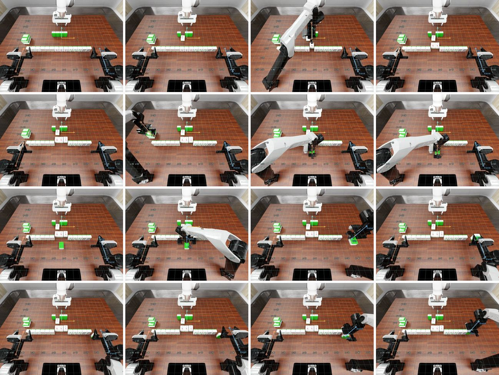
有三个任务还包含作者的腕部相机视图。不附带任何动作轨迹或机器人状态。
计划更好还不够。有了任一种示范，模型都更常借桌面中转来传递物体，掉落也更少。在 make_kong 中，它会照着示范完成交接，没有示范时它从不这样做，即使文本轨迹只用坐标给出这次交接也一样。示范的最后一步是把牌竖着夹住推进这一排，两次运行都没有照做，都在这里弄丢了牌，得分为 0。这类改进会被其他环节的失败抵消，所以总分几乎没变。
2.2自我改进循环
有几个 RoboDojo 参赛系统会自己编写技能来改进自身（EmbodiedEvo、SenseNova-RoboRSI）。在这里，一个 Codex 智能体从 RoboDawn 示范出发，在 move_eef 之上编写额外的操作，并附上何时使用它们的指南。42 个任务分成五组。每一轮模型在其中一组上运行这个库，智能体再查看得分、日志和视频，修订这个库。整个过程没有人工修改，也不按任务存储或查找任何内容。
new 为本轮新增
stack_bowls1plug_in_charger0general_pickup1fill_pen_holder0sweep_blocks0deposit_coin0.2cover_blocks0classify_objects0.4push_T1plug_in_charger 和 fill_pen_holder 中，模型在插头或笔还没到位时就松开了。place(..., release_after_lowering=false) grasp(..., close_after_approach=false) insert(arm, entry_point, tip_offset, axis, standoff, depth, advance)
得分按任务计，范围 0 到 1。每一轮运行的是不同的任务组，所以这不是学习曲线。问题和改动是对库自身记录的转述。
这个库改变了模型的抓取方式，首轮中空抓更少，也没有出现双臂互撞。每个任务只练一次的情况下，它在见过的任务上比循环自己的运行略高，在评测集上和默认配置持平。报告有明显提升的系统，每个任务练习的次数要多得多（EmbodiedEvo、PhysRSI-eval）。自我改进循环有用，但见效慢。
03场景几何
近期的智能体系统会用专门的模型给模型提供深度、点云和可供性。GPT-6 用不着这么多。它自己的夹爪读数、从 RGB 预测的深度，加上一小段把像素换算成 3D 坐标的代码，在不用模拟器真值的情况下就拿到了大部分提升，而预先算好的可供性没有帮助。
3.1机器人读数
机器人读数是每个夹爪的基本传感器数值，包括手指位置和受力、接触力和腕部负载，不含物体真实位姿这类特权信息。
读数在抓取时帮助最大。默认接口只报告模型要求的夹爪开度，而读数给出手指实际到达的开度和每个指尖的受力。
| insert_tubes，闭合之后 | 默认 | 有读数 |
|---|---|---|
| 夹爪开度，0 到 1 | 0.24 | 0.44 13.6 mm |
| 接触力，N | 未报告 | 24.9 / 24.5 |
手指停在 0.44，而不是指令要求的 0.24，并且两侧都在施力，说明管子已经夹住了。
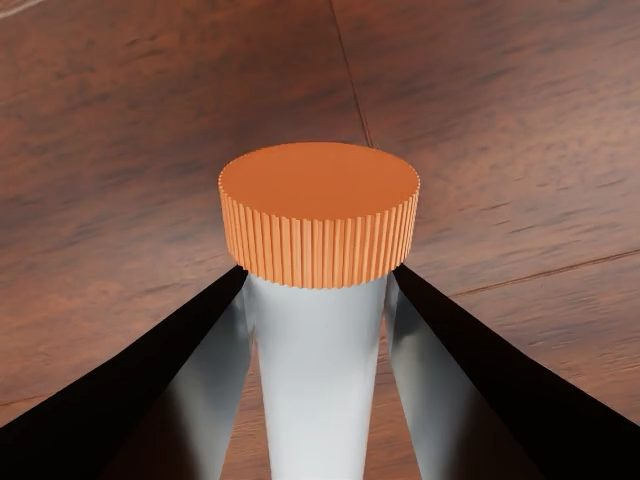
读数的写法同样重要。写成完整 JSON 时，读数挤占了上下文，让许多回合进入了上下文压缩，所以 JustRUA 用一种简短的文本格式来写。
| 无读数 | 完整 JSON | 紧凑 | |
|---|---|---|---|
| 评测集 | 38.0 | – | 39.8 |
| 首轮 | 42.4 | 33.5 | 38.3 |
| 空抓，首轮 | 47 | 47 | 41 |
| 每次决策新增字符数 | 0 | ~3,100 | ~1,800 |
| 发生上下文压缩的回合 | 0% | 38% | 0% |
| 每回合成本 | $4.94 | $7.13 | $5.51 |
完整 JSON 只在首轮上运行。每个首轮回合的成本。
3.2深度
许多近期的智能体系统用深度在 3D 空间里定位物体（RoboHarness、GPT-GEAR、RAX），但 RoboDojo 排行榜不接受智能体参赛项使用模拟器深度，维护者在评审中明确说过这一点。我们同时测试了模拟器深度和 Depth Pro 只用 RGB 预测的深度。
预测出的距离偏差很大，即使给了真实焦距也差几十厘米。按机器人几何逐帧缩放有所改善，但缩放比例在帧与帧之间漂移，腕部相机也无法拟合，所以 JustRUA 直接传入原始预测。
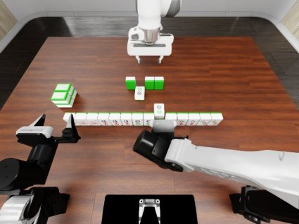
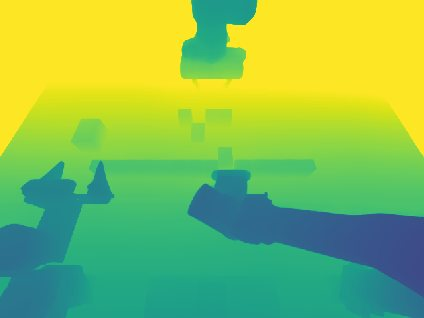
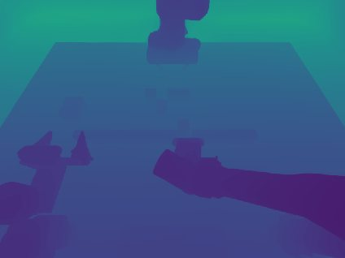
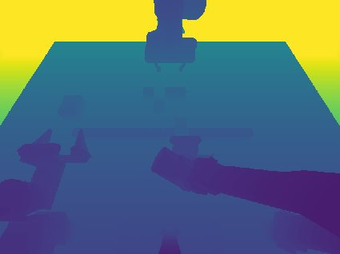
| 头部相机，桌面区域 | 平均绝对误差 | 皮尔逊 r | 斯皮尔曼 ρ |
|---|---|---|---|
| 原始预测 | 73.7 cm | 0.993 | 0.992 |
| 使用真实焦距 | 40.1 cm | 0.993 | 0.992 |
| 按机器人几何逐帧缩放 | 7.3 cm | 0.993 | 0.992 |
图像来自 make_kong。表格对 make_kong 和 fill_egg_holder 的六帧头部相机图像取平均，与模拟器深度对比。缩放一帧不会改变两种相关系数。
即便如此，预测深度对操作的改善几乎和模拟器深度一样大，空抓同样少，精细放置失败更少，只是掉落没有减少。预测把深度的前后顺序弄对了，这似乎就已足够。
| 机器人读数 | 模拟器深度 | 预测深度 | |
|---|---|---|---|
| 评测集 | 39.8 | 46.0 | 42.4 |
| 每回合成本 | $5.51 | $7.26 | $7.74 |
首轮，同样的 42 个回合。
3.3可供性
深度能告诉模型表面在哪里，但不能告诉它物体可以从哪里抓、哪只机械臂够得着。这类知识就是可供性。近期的智能体系统用专门的模型计算可供性（CLARO、ORA），而许多回合正是在抓取时出错，所以我们测试了直接把可供性交给模型。
对每个相机视角，GraspGen 为每个物体给出最多八个抓取位姿，逆运动学则标出每只机械臂能够到哪些表面。两者都画在图像上，文本里再列出抓取位姿。难点在于怎么呈现，因为往观测里加任何东西，要么占更多篇幅，要么挤占原有内容。
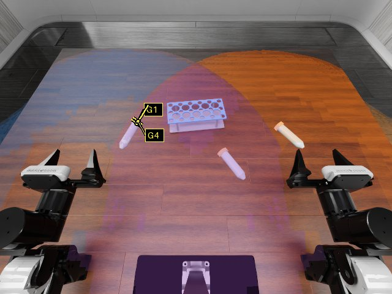
绘制在每个相机视图上，不提供深度图。标记会遮住它们所指的像素。
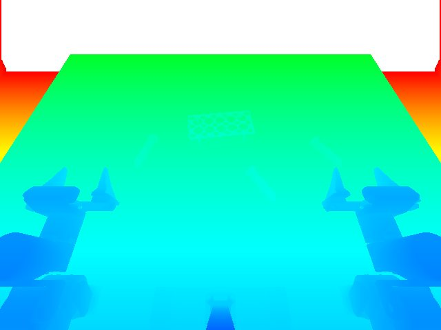
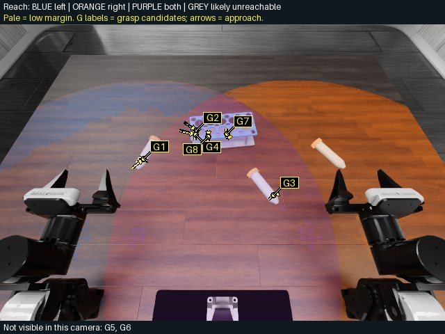
干净的 RGB 和深度重新加入，因此每个相机视图出现三次。
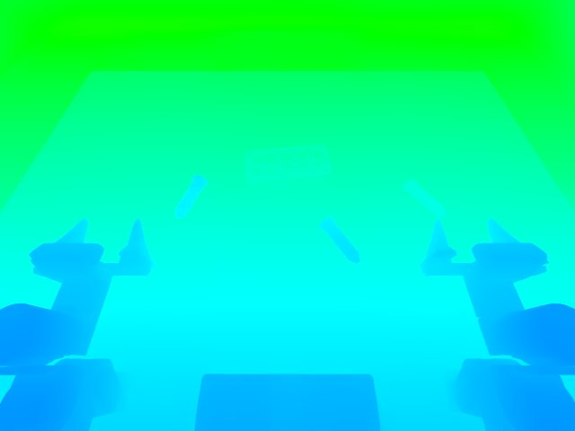
深度由 RGB 预测，干净的 RGB 再次略去。
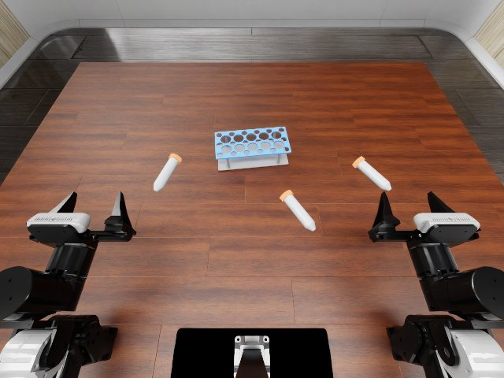
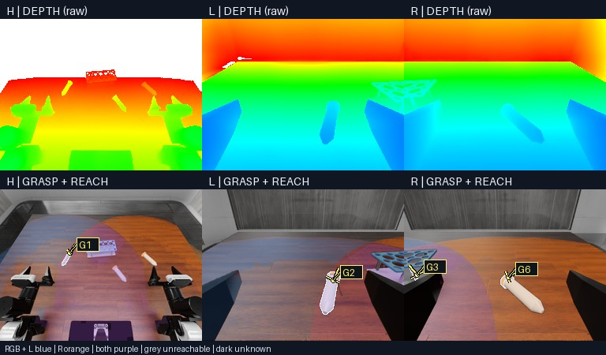
干净的 RGB 保持完整尺寸。其余六个视图缩小到 256 × 192 像素，放进一个面板，至多显示四个抓取候选。
insert_tubes 第一次决策时的头部相机图像。点击图像可放大。
与同一来源的深度图相比，四个版本都没有抓得更稳，得分也没有更高。可供性能起作用的时刻很少：交接仍然少见，抓取候选只在开始抓取时才有用，而它们的成本却伴随每一次观测。我们没有把可供性放进 JustRUA。
| 模拟器深度 | 预测深度 | |||||
|---|---|---|---|---|---|---|
| 深度图 | 绘制可供性 | 绘制，附 RGB 和深度 | 深度图 | 绘制，附深度 | 可供性面板 | |
| 评测集 | 46.0 | 36.7 | – | 42.4 | 30.9 | 42.1 |
| 首轮 | 51.8 | 34.6 | 35.2 | 47.7 | 30.1 | 45.5 |
| 行为，首轮 | ||||||
| 空抓 | 17 | 17 | 25 | 16 | 39 | 34 |
| 交接 | 9 | 14 | 11 | 15 | 9 | 14 |
| 来自另一只机械臂的视图 | 25 | 29 | 27 | 31 | 39 | 40 |
| 每次观测的 token 数 | ~3,500 | ~3,000 | ~5,300 | ~3,700 | ~3,200 | ~3,300 |
| 每回合成本 | $7.26 | $6.91 | $9.17 | $7.74 | $6.63 | $7.54 |
3.4坐标解算
在最后一步，模型还可以在会话里编写并运行代码1，Code as Policies 和 URAI 也是这样做的，同时取消 100 次决策的上限。
几乎每次运行都用代码解算坐标：根据相机标定从像素发出射线，再用两个相机看到的同一点做三角测量，或者与已知高度的表面求交。代码从不读取深度图。因此代码相当于又一个场景几何的来源，这也是它归在这一维度下的原因。
| 代码用途 | 运行次数 | 占比 |
|---|---|---|
| 几何：三角测量、像素转 3D 点、位姿与偏移 | 123 | 93.2% |
| 列出输入文件或重读自己的代码 | 5 | 3.8% |
| 裁剪并放大图像 | 3 | 2.3% |
| 无输出 | 1 | 0.8% |
| 合计 | 132 | 100% |
42 个首轮回合中的代码运行，经人工复查。
| 预测深度 | 坐标解算 | |
|---|---|---|
| 评测集 | 42.4 | 50.3 |
| 首轮 | 47.7 | 54.0 |
| 每回合成本 | $7.74 | $12.53 |
每个首轮回合的成本。
在 insert_tubes 中，模型从像素定位管子和试管架上的孔，放好了全部三根管子。
| insert_tubes，相同布局 | 预测深度 | 坐标解算 |
|---|---|---|
| 得分 | 40 | 100 |
| 决策 | 65 | 57 |
| 控制步，共 500 | 500 | 496 |
播放器在代码运行处暂停，并跳过中间的片段。距离比较的是代码输出与随后发出的指令，而不是物体的真实位置。代码和输出都是模型实际运行时的原样。
1 网页搜索保持关闭，这样模型无法查到这个基准或它的解法。
04错误分析
在最佳配置下，42 个首轮任务中有 21 个得分低于 50。我们把每个这样的回合按原因分类，看进一步的提升需要一个通用的修正，还是要逐个任务下功夫。结果发现，大多数失败只出现在单个任务上。
4.1失败分类
4.2可能的改进
前三类原因各自指向一种通用的修正，但每一种都需要代价不小的额外知识。
修改任务提示词能解决提示词和评分方面的问题，把首轮得分从 54.0 提高到 55.6。其余问题需要逐个任务反复试错，接近在测试任务上调参。
评测说明
官方评测每个任务跑 50 个回合，因为单个布局的得分波动很大。我们跑的回合少得多，而且各轮难度不同，所以这里的每种配置都在同一组固定布局上运行，首轮和评测集都是如此。
轮间波动
低、中两档推理强度在八轮中同涨同跌（相关系数 0.84），不过我们没有把布局难度和每次运行的随机性分开。单看首轮往往偏高，下面三种设置的首轮得分都高于八轮均值。
默认测试平台在八轮中各轮的得分。
| 首轮 | 8 轮均值 | 完整评测 | |
|---|---|---|---|
| 官方 L3 harness | 32.3 | 28.7 | 29.0 |
| 默认测试平台，低强度 | 35.9 | 34.5 | — |
| 默认测试平台，中强度 | 42.4 | 35.9 | — |
官方 L3 的各轮把我们的八个布局对应到 RoboProbe 公布的回合上。
运行四个布局的任务
这 23 个任务各在四个布局上运行。每个布局上，部分完成最多得 50 分，而默认测试平台在八轮中既成功过也失败过。
push_Tsort_nesting_dolls_by_sizestack_bowlsfold_clothesarrange_largest_numberpack_objects_into_boxswap_Tmatch_and_pick_from_conveyorimitate_sorting_sequencepress_by_numbercover_blocksalign_blockssolve_equationstack_blocks_by_languageclassify_objects_by_languagegeneral_pickuppick_from_conveyor_by_imageplug_in_chargerfasten_screwsplay_Xylophonepour_balls_into_vaseput_bottles_into_dustbinclassify_objectsswap_T 是一个典型例子。只有当两个 T 形块在 20 mm 和 3° 以内互换位置，且两只机械臂都回到静止位置时，它才得 100 分，否则得 0 分。两种设置在首轮都得 0 分，而在八轮中各成功了四轮。
| 轮次 | 1 | 2 | 3 | 4 | 5 | 6 | 7 | 8 |
|---|---|---|---|---|---|---|---|---|
| 低强度 | 0 | 100 | 0 | 0 | 0 | 100 | 100 | 100 |
| 中强度 | 0 | 0 | 100 | 100 | 0 | 100 | 0 | 100 |
参考文献
- Michael Ahn, Anthony Brohan, Noah Brown, et al. Do As I Can, Not As I Say: Grounding Language in Robotic Affordances. CoRL, 2022.
- Aleksei Bochkovskii, Amaël Delaunoy, Hugo Germain, et al. Depth Pro: Sharp Monocular Metric Depth in Less Than a Second. ICLR, 2025.
- Tianxing Chen, Yue Chen, Zixuan Li, et al. RoboDojo: A Unified Sim-and-Real Benchmark for Comprehensive Evaluation of Generalist Robot Manipulation Policies. arXiv:2607.04434, 2026.
- Galbot Team, Xuchuan Chen, Xiaoqian Cheng, et al. Systematically Exploring the Capabilities of GPT-6 Astra as Embodied Policies. arXiv:2609.38537, 2026.
- Shijia Ge, Alex Zhou, Jianshu Zeng, et al. Make Code as Policy Great Again: Frontier Agents Write, Call, and Evolve Robot Tools. arXiv:2609.39018, 2026.
- Meng-Hao Guo, Zhe-Han Mo, Jia-Jun Wang, et al. Transferring the Intelligence of VLMs to Robotic Control. arXiv:2609.22966, 2026.
- Runhan Huang, Xiangcheng Zhang, Haoyu Chen, et al. Scaling Online Exploration for Robot Agents. arXiv:2610.22496, 2026.
- Sungsu Kim, Vineet Bhat, Prashanth Krishnamurthy, et al. CLARO: Clutter Aware Robot Orchestrator for Open-Vocabulary Grasping using VLM Agents. arXiv:2610.24016, 2026.
- Wenyi Li, Yizhe Chi, Youjie Zheng, et al. EmbodiedEvo: Self-Evolving Coding Agent for Physical Intelligence. arXiv:2610.18867, 2026.
- Zekai Li, Jiayi Yu, Jinlu Zhang, et al. Where is Physical RSI Capability From? An Observational Scaling Law of LLM-as-Policy. arXiv:2610.26848, 2026.
- Jacky Liang, Wenlong Huang, Fei Xia, et al. Code as Policies: Language Model Programs for Embodied Control. ICRA, 2023.
- Adithyavairavan Murali, Balakumar Sundaralingam, Yu-Wei Chao, et al. GraspGen: A Diffusion-based Framework for 6-DOF Grasping with On-Generator Training. arXiv:2507.13097, 2025.
- OpenAI. Codex. Software, 2026.
- OpenSenseNova. SenseNova-RoboRSI: Recursive Self-Improvement for Embodied Agents. Code, 2026.
- Bince Qu, Wei Chen, Bo Zhang. RoboHarness: A Simple Harness Outperforms VLA and World Actions Models. arXiv:2610.14018, 2026.
- SenseNova and Joint Research Team, Zhongang Cai, Ziang Cao, Tailai Chen, et al. Has GPT-6-Astra Achieved Embodied Intelligence? arXiv:2610.22471, 2026.
- Balakumar Sundaralingam, Siva Kumar Sastry Hari, Adam Fishman, et al. cuRobo: Parallelized Collision-Free Minimum-Jerk Robot Motion Generation. arXiv:2310.17274, 2023.
- XPolicyLab maintainers. Review comment on simulator depth for agent entries, pull request #151. GitHub, 2026.
- Jenai Xuning Yang, Ashna Khetan, Shun Zhang. Astranomy: An Empirical Study of GPT-6 Astra as a Native Robot Policy. CoRL Late-Breaking Results, 2026.
- Yuanbo Yang, Siyi Chen, Jun Gao, Hao Zhang. ORA: Open Robot-Use Agents. Code and blog post, 2026.
- Wenbo Zhang, Kaixuan Wang, Yutao Ouyang, et al. An Unexpected Robot Policy: Early Evaluations of GPT-6 Astra on RoboDojo and Beyond. arXiv:2609.24170, 2026.
- Tony Z. Zhao, Vikash Kumar, Sergey Levine, Chelsea Finn. Learning Fine-Grained Bimanual Manipulation with Low-Cost Hardware. RSS, 2023.
- Youwei Zhou, Bohan Hou, Yankai Fu, et al. Large Multimodal Models for Direct Robot Control: GPT-6 as a Beginning. arXiv:2610.28259, 2026.
引用
@misc{justrua2026,
title = {JustRUA: A Controlled Study of GPT-6 Robot-Use Agents},
author = {Zefan Wang and Yufan Dang and Xuanwei Shi and Mingqi Gao and Cheng Yin and SikYuen Tam and Hanyu Liu and Yasheng Wang and Yaxi Lu and Songyang Zhang and Xin Cong and Yuan Yao},
year = {2026}
}